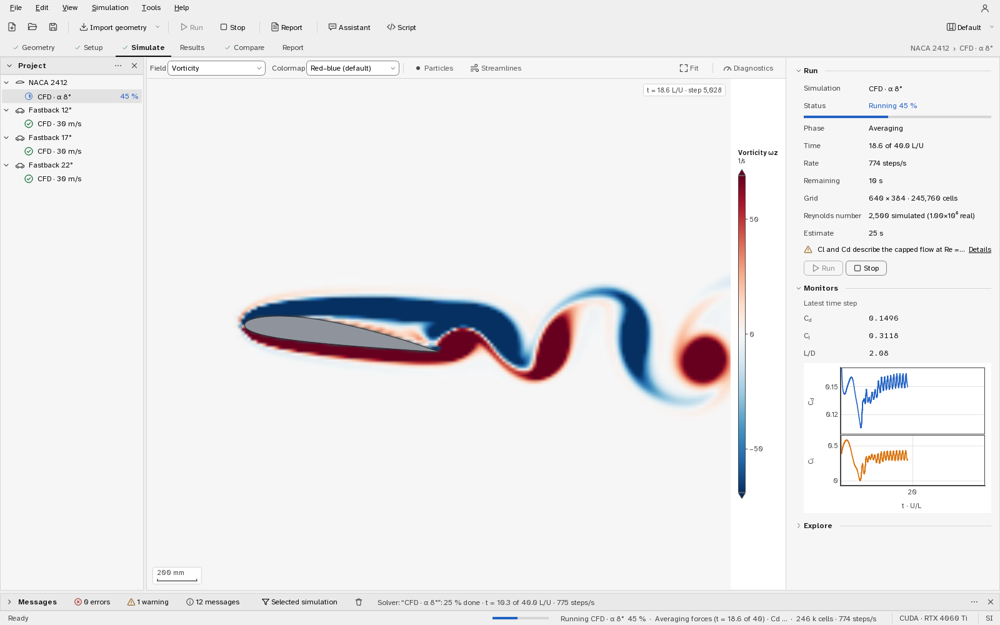
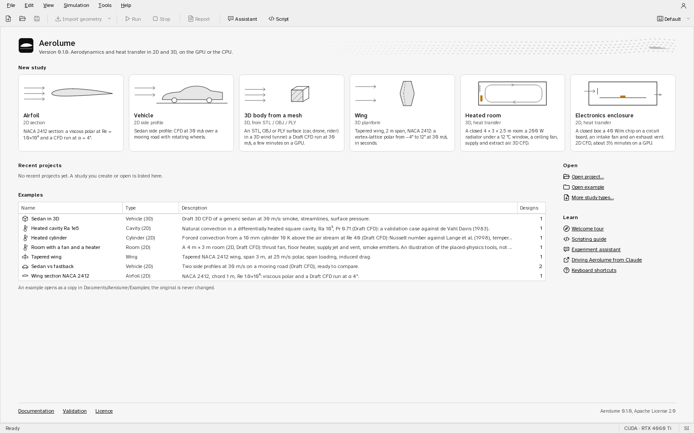
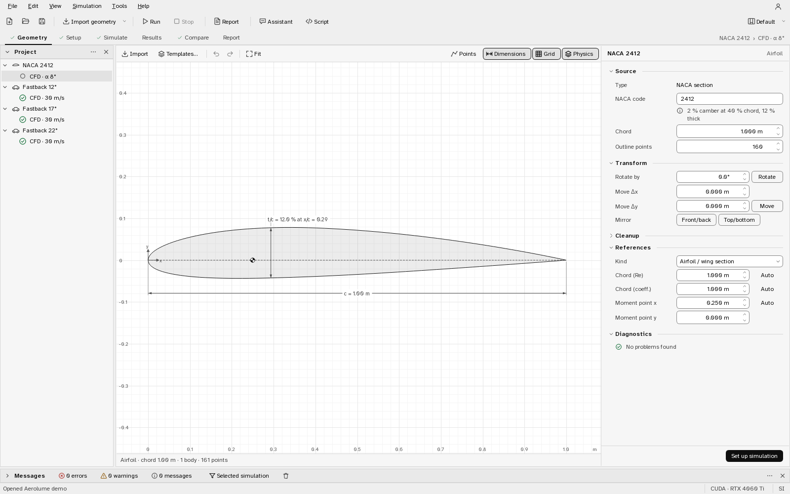
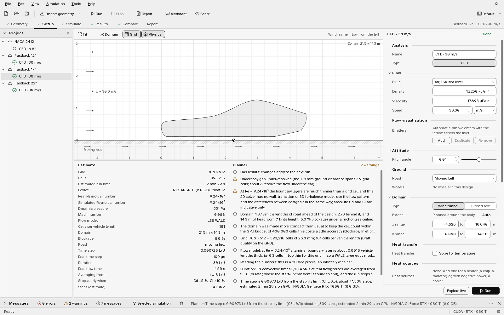
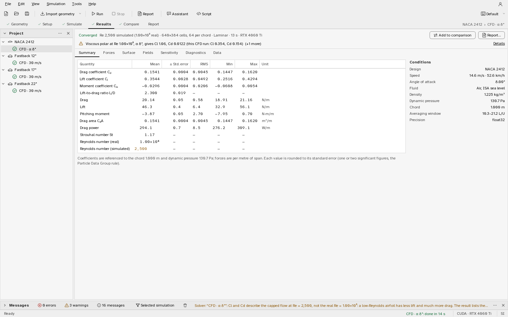
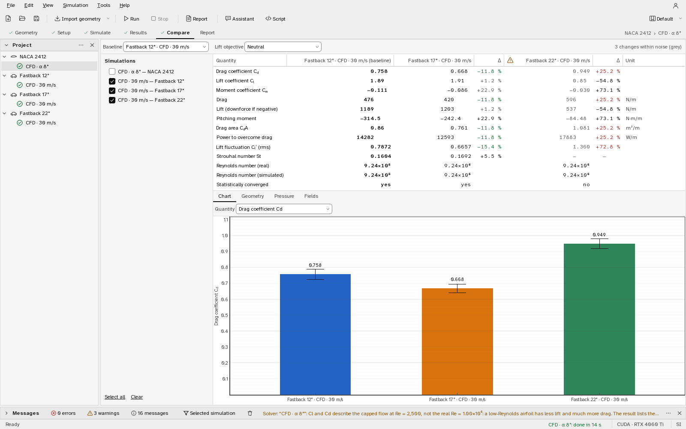
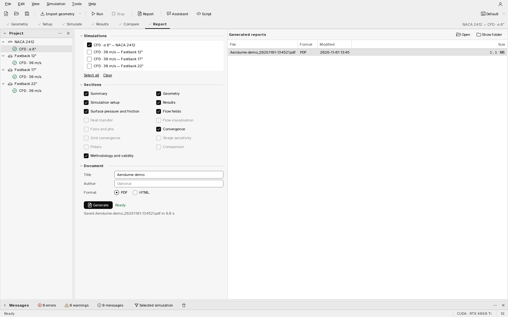

Documentation
- All documentation
- Overview
- Installing Aerolume
- User guide
- Simulation guide
- Scripting API
- Experiment assistant
- MCP server
- Accounts (optional)
- Methods
- Navier–Stokes solver (2D)
- Navier–Stokes solver (3D)
- Airfoil analysis
- Finite wings
- Sensitivity maps
- Validation report
- Airfoil validation
- Finite-wing validation
- Design guidelines
- Contributing
- Third-party notices
On this page
- 1. The window
- 2. Start page and projects
- 3. Geometry
- 4. Setup
- 5. Simulate
- 6. Results
- 7. Compare
- 8. Report
- 9. Three dimensions and finite wings
- 10. Heat, smoke, fans and rooms
- 11. Explore: drawing into the flow, diagnostics and the solver trace
- 12. The Script console and the scripting API
- 13. The experiment Assistant
- 14. Accounts (optional)
- 15. Keyboard shortcuts
- 16. When something goes wrong
Documentation / Guide
User guide
This guide follows the application from an empty window to a finished report. It describes what each page shows and what each control does. How a run is planned, when it stops and how far to trust its numbers are in the companion chapter Running simulations; the physics and numerics are in the theory documents.
Install Aerolume with the Windows installer or from source as described in
Installing Aerolume, then start it from the Start menu, or with aerolume
(or python -m aerolume.app) in a source install. The first start shows a short welcome tour
(Help ▸ Welcome tour shows it again). Sections 1–8 follow the six pages of a study; sections
9–14 cover 3D, the placed physics (heat, smoke, fans and rooms), live editing and the solver
diagnostics, the Script console, the Assistant and the optional accounts.
1. The window#

| part | what it is for |
|---|---|
| Menu and toolbar | New, Open, Save; Import geometry; Run (F5) and Stop (Shift+F5); Report |
| Step bar | the six steps of the workflow: Geometry, Setup, Simulate, Results, Compare, Report. The active step is underlined, completed steps carry a check mark. Ctrl+1 … Ctrl+6 jump to them. The right end shows the current design and simulation. |
| Project panel (left) | every design with its simulations nested under it. The icon in front of a simulation is its status: not run, queued, running (with the percentage), done, stopped, failed. Selecting an item makes it current on every page. Right-click for New simulation, Run, Duplicate, Rename (F2) and Delete. |
| Page (middle) | the current step. Most pages have a viewport in the middle and their settings in the Properties panel on the right. |
| Messages panel (bottom) | what the planner decided and why, warnings, errors and the run log, with filters for errors, warnings and messages, and for the selected simulation only. It opens by itself when something needs attention. |
| Assistant, Script, Flow visualisation, Diagnostics panels | hidden until asked for: the experiment assistant (section 13), the Python console (section 12), the smoke / particle / streamline layers of the flow on screen, and the solver diagnostics of a running simulation (section 11) |
| Account button (top right) | optional cloud accounts (section 14); with no account service connected it only says that the program works offline |
| Status bar | the last action, the progress of a running simulation, the compute device (for example CUDA · RTX 4060 Ti) and the unit system. |
Panels and workspaces. Every side panel can be collapsed to its header (the chevron or a double-click on the header), moved up or down or to another edge (the header's menu), hidden and brought back from View (Alt+1 … Alt+7), and resized by dragging the rail's edge. Where a panel's effect can be switched off without losing its settings, its header has an on/off switch (Diagnostics ▸ Record, for example). The arrangement is a workspace: View ▸ Workspace offers Default (Project and Properties, the log folded at the bottom), Analysis (the Assistant and the open log beside the results), Live (Flow visualisation and Diagnostics beside a live run) and Scripting (a tall Script panel, the Assistant on the right). Each workspace remembers your changes across restarts; View ▸ Workspace ▸ Reset restores the preset. In a narrow window the right-hand panels fold into the left rail as tabs and return when the window is wider.
Everything is saved as you go: changes to designs and simulations are written to the project folder when you make them, results when a run finishes. View shows or hides the panels and switches the theme (View ▸ Theme, light or dark, also Ctrl+Shift+T); Edit ▸ Preferences (Ctrl+,) sets the theme, the units and the default compute device and precision. Tools has the import, the template gallery and NACA sections, and report generation.
2. Start page and projects#

With no project open the window shows the start page: the study types to start from, Open project… and Open example, links to this guide, the keyboard shortcuts and the validation cases, and the projects you used recently and the examples.
- New airfoil study creates a project with a NACA 2412 section (chord 1 m) and two simulations ready to run: a viscous polar at Re = 10⁶ from −4° to 14°, and a CFD run at 4° at Draft quality.
- New vehicle study creates a sedan side profile on a road with one CFD simulation at 30 m/s, moving road, Draft quality.
- 3D body from a mesh imports an STL, OBJ or PLY surface (a car, a drone, a rider) into a 3D wind tunnel with a Draft CFD run at 30 m/s (a few minutes on a GPU).
- Wing (3D) creates a tapered NACA 2412 wing (2 m span) with a vortex-lattice polar from −4° to 12° at 30 m/s, which runs in seconds.
- Heated room (3D) creates a closed 4 × 3 × 2.5 m room with a 200 W radiator under a 12 °C window, a ceiling fan and supply and extract air: 3D CFD with heat transfer and buoyancy.
- Electronics enclosure (2D) creates a closed box cross-section with a circuit board, a 40 W/m chip, an intake jet with a fan and a balancing exhaust vent.
- Empty project has no geometry: import a 2D outline or a 3D mesh, or start from a template.
- Open example copies one of the bundled example projects to
Documents/and opens the copy, so the original stays intact. Every example contains finished Draft results, so every page has something to show at once: Sedan in 3D (smoke, streamlines and surface pressure of a 3D car), Tapered wing (a finite-wing polar), Heated cylinder (forced convection at Re 40 against its reference Nusselt number), Heated cavity Ra 1e5 (the natural-convection benchmark), Room with a fan and a heater (fan, heater, supply jet, vent and two smoke colours in a 2D room), Wing section NACA 2412 (a polar and a CFD run at 4°) and Sedan vs fastback (two car profiles at 30 m/s, ready to compare).Aerolume/ Examples
A project is a folder named <Name>.aerolume with one JSON file per design and per
simulation and the results next to them (DESIGN.md section 5.7 describes the format).
It can be copied, zipped or put under version control as it is.
3. Geometry#

The viewport draws the design to scale: outline, a light fill, the chord or length dimension, the maximum thickness of an airfoil, the moment reference point (the circle with a cross) and, for vehicles, the road. Scroll to zoom, drag to pan, Fit to frame the design; Points shows the vertices, Dimensions and Grid toggle the annotations.
Getting a shape in
- Templates… opens the template gallery: NACA 4- and 5-digit airfoils, a two-element ground-effect wing, seven road vehicles (sedan, hatchback, fastback, SUV, pickup, van, box truck), a 2D Ahmed body, and bluff bodies (cylinder, square, ellipse, flat plate, rounded rectangle). A template's parameters (length, height, ground clearance, windscreen and rear angles, wheels, …) stay editable afterwards in the inspector.
- Import (Ctrl+I, or drop a file on the window) reads airfoil coordinates (
.datin Selig or Lednicer order), SVG paths, DXF polylines, CSV point lists and silhouettes from images (PNG, JPG). The import dialog shows a preview and what it repaired (closed gaps, joined open paths, removed duplicate points), asks for the real length of the shape when the file has no units, and whether it is an airfoil, a vehicle or a generic body.
Inspector (right)
- Source: where the shape came from and how many edits it has had.
- Transform: chord or length (scales the shape), rotate, move, mirror.
- Cleanup (collapsed): resample the outline to a number of evenly spaced points (sharp corners are kept) and smooth noisy imported outlines.
- References: the kind of design and the reference quantities every coefficient uses: the length for the Reynolds number, the length for the coefficients (the chord of an airfoil, the frontal height of a vehicle) and the moment point (quarter chord for airfoils). Auto follows the shape; type a value to fix it.
- Diagnostics: problems the solvers would trip over — self-intersections, outlines with too few points, trailing edges or gaps too thin for the grid — or No problems found.
Set up simulation (bottom right) goes to the next step.
4. Setup#

Setup edits the selected simulation. The top of the page previews the case in the wind frame (flow from the left, the design rotated by the angle of attack); Domain shows the computational domain the planner chose. Below it, the Estimate table and the Planner notes update as you change any setting.
Property grid
| group | settings |
|---|---|
| Analysis | name; type: CFD (Navier–Stokes, any design) or Polar (viscous–inviscid, single airfoils only) |
| Flow | fluid (air at an ISA altitude or a temperature, water, or custom density and viscosity), speed and its unit |
| Attitude | angle of attack (airfoils) or pitch (vehicles), with a slider |
| Ground | road: none, fixed floor or moving belt; whether wheels rotate (vehicles) |
| Mesh & time | quality (Draft, Standard, Fine, or Custom once you override a value), cells per chord / vehicle height, upstream, downstream and height of the domain, duration and the start of averaging; Auto everywhere by default |
| Solver (collapsed) | turbulence (auto, laminar, LES), Reynolds number (real or capped) and the cap (fixed when the simulation is made — Re 2,500 for a new capped airfoil, the same on every quality and device; Auto lets the grid choose, which changes with the quality), precision, device, sensitivity map and its objective |
| Polar (Polar only) | angle range and step, Ncrit, forced transition on each surface, Mach number, panels |
| Wing analysis (wings only) | method (vortex lattice or lifting line), viscous or inviscid, angle range, sideslip |
| Flow visualisation | smoke and particle emitters (section 10); in 3D without emitters, the automatic smoke rake upstream of the body |
| Domain | Wind tunnel (a free stream from the left) or Closed box (walls on every side: a room, an enclosure, a cavity) and its extent, Auto or typed |
| Heat transfer | on/off, ambient temperature, buoyancy and gravity, the fluid's thermal properties (Auto from the fluid), each domain wall (adiabatic, temperature or heat flux) and each body's surface condition |
| Heat sources, Fans, Jets and vents | lists of placed items with Add, Duplicate and Remove and the selected item's fields (section 10) |
| Diagnostics (collapsed) | record solver diagnostics (on by default), fixed or PID-controlled time step |
Estimate lists what the planner made of these settings: the real and the simulated Reynolds number, dynamic pressure, flow model, grid and cells, cells per reference length, domain, blockage, road, time step, duration, averaging start, the early-stop target ("Cd ±5 %, Cl ±10 %"), the number of steps and the estimated run time on the device. The Planner list explains each decision in a sentence and puts warnings first (for example that lift and drag are not reliable at a Reynolds number the grid cannot resolve, or that a car's underbody gap is only four cells high). The same lines go to the Messages panel when the run starts. When the strip under the preview is narrower than about 520 px (1280 × 800 with the Project and Assistant panels open), the Estimate moves above the Planner, so neither has to cut its values short; the property grid never gets narrower than its own fields, and side panels give way first.
New simulations start at Draft quality, so the first run comes back in seconds (an airfoil) to a few minutes (a car). Airfoils above Re = 10⁵ start in the capped Reynolds mode, at Re = 2,500 on every quality and device: the CFD run is a resolved flow at a lower Reynolds number, and the polar answers at the real one. A simulation added to a design that has none starts from the fluid, speed, angle, quality and Reynolds settings of the study's latest CFD run, so the designs of a study are compared at the same conditions. Running simulations explains both choices and the presets.
With heat transfer on, the Estimate table adds the temperature scale and the dimensionless groups the run rests on (Ra, Gr, Pr, Ri, Pe), each with the rule that chose it, and the planner warns about what the grid or the model cannot carry (an unbalanced closed box, an item outside the domain, a thermal boundary layer only a few cells thick, a temperature difference too large for the Boussinesq model).
Run (bottom right) queues the simulation and opens Simulate; Explore live starts explore mode (sections 5 and 11).
5. Simulate#
The viewport shows the running simulation. Its toolbar selects the field (speed, pressure coefficient, vorticity, smoke, eddy viscosity), the colour map (each field has a sensible default; no rainbow maps), and the overlays Particles and Streamlines; Fit frames the design again. The colour bar on the right edge carries the field's name, unit and ticks; the scale bar at the bottom left gives the size. Hovering over the field shows the value under the cursor.
The Run panel on the right shows the simulation, its status and a progress bar, the phase (Transient while the start-up washes out, then Averaging), the simulated time in convective units, the rate in steps per second, the remaining time, the grid, the Reynolds number and the estimate. Stop ends the run at the next block of steps and keeps what has been computed as a result marked Stopped — except when the run was a Run again of a finished simulation: the partial run is then discarded and the earlier complete result stays. The panel always describes the simulation selected in the Project panel: when another one is running, a line above the rows says whose flow the viewport shows, and for a queued simulation the button reads Remove from queue. A polar sweep shows a busy bar until its first angle is in (the first angle is solved from scratch and takes most of the start; Setup shows the expected run time). Monitors shows the latest Cd, Cl and L/D and their histories; the averaging window is shaded.
Runs are queued: pressing Run on another simulation while one is running adds it to the queue (the project tree shows Queued). Results are saved to the project as soon as a run ends.
Explore (the collapsed group in the right panel, or Explore live on Setup) runs the flow in real time at Draft resolution (a coarser grid on a CPU), without averaging or an end — typically 30–50 frames per second on a mid-range GPU — while you drag the angle and the speed sliders; the field and overlays can change as it runs. Its grid is shown in the Run panel while it runs. It is for building intuition and finding interesting cases; its numbers are not results. Run with these settings turns the explored angle and speed (and the moved emitters, fans, heaters and jets) into a simulation (a new one if the current one already has a result) and queues it. Section 11 describes drawing obstacles into the running flow, moving placed items, and the diagnostics.
6. Results#

The header states the facts that decide how far to trust the run: converged or not, the Reynolds number (simulated and real when they differ), the grid and the cells per reference length, the flow model, the run time and the device. Converged judges the monitored quantities (the force coefficients, the Nusselt number, each fan's flow); when 5 % or more of the heat put into the fluid was still being stored at the end, the header says so ("9 % of the heat still being stored"), and above 10 % it is drawn in the warning colour because the domain had not reached a thermal steady state. A warning line follows when needed, with Details for the full text. Add to comparison puts the run on the Compare page; Report… opens the Report page.
| tab | content |
|---|---|
| Summary | every coefficient and force with its mean, standard error, RMS, minimum, maximum and unit; the Strouhal number when the flow sheds; the conditions on the right |
| Forces | Cd, Cl and Cm against time with the averaging window, and per-body values when there are several bodies |
| Surface | pressure and skin-friction coefficients along the surface (upper and lower sides of an airfoil plotted against x/c) |
| Fields | the mean and the last instantaneous fields with the same toolbar as Simulate |
| Heat transfer | runs with heat transfer: the mean Nusselt number and heat rate of every body with standard errors, the heat balance of the domain, the temperature field and the wall heat flux |
| Fans | runs with fans: delivered thrust, volume flow, mean induced speed and ideal power of each fan, beside the momentum-theory reference |
| Diagnostics | the solver's end-of-run divergence, change norms, CFL number, time step and residual (section 11) |
| Sensitivity | the shape-sensitivity map on the outline, when it was computed (Setup ▸ Solver ▸ Sensitivity map), relative to its strongest values: the pattern is reliable, the size only indicative (the values in 1/m are in the surface CSV) |
| Polar | polar simulations only: Cl(α), drag polar, Cm(α), L/D and transition, and the table of points. (A CFD run of a single airfoil states its polar cross-check in the header warning and the Messages panel.) |
| Data | the raw numbers and the exports: summary, force history, surface data and polar table as CSV, flow fields as VTK (.vti, for ParaView) or NumPy .npz, and every figure as PNG |
Every value is rounded to its standard error. A run that ended before its uncertainty target is labelled Not converged and its error bars say how far it got; when the run was too short to measure its error bars (fewer than about 20 independent samples), its warning says they are rough estimates, the report marks them with ~, and Compare does not call a difference significant on them. A polar whose lift is still rising at its last angle shows Cl,max as a lower bound ("≥ 1.547, still rising at α = 14°"): extend the last angle in Setup to find the stall.
7. Compare#

Compare puts simulations with results side by side. Tick them in the list on the left (at most what fits the table; four by default, preferring runs of the same kind — CFD with CFD, polars with polars), choose the Baseline, and tell the page whether more lift is good (a wing), bad (a race car's front wing producing downforce reads negative lift) or neither (a road car) with Lift objective.
The table lists every quantity for every simulation and, for each variant, the change against the baseline in per cent. Green and red mark improvements and deteriorations; grey marks a change smaller than the combined statistical uncertainty of the two runs — not a real difference. A warning icon in a column header flags a run that did not converge. Below the table:
- Chart: a bar chart of the chosen quantity with error bars.
- Geometry: the outlines overlaid in their series colours.
- Pressure: surface pressure of all selected runs.
- Polars: the polars of the selected polar simulations.
- Fields: one field of each run on the same scale, or the difference to the baseline.
Compare designs run at the same quality and conditions: a Draft and a Standard run of the same car differ by more than most design changes. A warning line above the table says when the compared runs differ in speed, angle or fluid, or simulate different Reynolds numbers, because their differences are then not design effects alone (the report prints the same warnings). With runs of both kinds selected, the baseline is a CFD run: a polar has no single Cd to compare against.
8. Report#

Choose the simulations (all with results are ticked), the sections — summary, geometry,
setup, results, surface pressure and friction, flow fields, convergence, shape
sensitivity, airfoil polars, comparison, methodology and validity — a title, an author and
the format (PDF or HTML), then Generate. Reports are written to the project's
reports folder on a background thread and listed on the right with their size; Open
and Show folder act on the selected one. Every report states the conditions, the
uncertainty and the validity limits of each number it contains (the methodology section
says how they were obtained).
9. Three dimensions and finite wings#
A 3D design is a surface mesh (File ▸ Import ▸ 3D mesh (STL, OBJ, PLY)…, Ctrl+Shift+I, or a primitive) or a wing (Tools ▸ New wing). The Geometry page shows it in a 3D view (orbit with the left mouse button, pan with the middle one, scroll to zoom; Iso, Front, Side and Top views) with a mesh inspector: parts, units, size, watertightness and the checks the solver needs. A vehicle sits on the road (z = 0); a body that is symmetric about the centre plane is solved on a half domain with a symmetry plane, which halves the cost.
A 3D CFD run shows its flow in the 3D view of Simulate and Results: surface pressure, smoke (volume rendering of the released dye, up to four colours), streamlines from a rake you can move, vortex iso-surfaces and slices through the mean flow. The Flow visualisation panel switches the layers. A wing runs the finite-wing analysis instead (a vortex lattice or a lifting line on the section polars, seconds): lift, induced and profile drag, span loading and the stall-onset estimate. How a 3D run is planned and how far its numbers go are in Running simulations, sections 10–12.
10. Heat, smoke, fans and rooms#
The groups below Mesh & time on Setup place physics into a simulation. It works in 2D and 3D with the same meaning, and everything is off until you add it.
- Emitters (Flow visualisation): a point, a line or a rake of nozzles, a rectangle, or in 3D a disc or a plane, releasing smoke (a passive dye) or tracer particles (streaklines; pulsed emitters draw timelines). Each colour is its own smoke channel, up to four. Wind emitters stay put when the body is pitched or yawed; body emitters move with it.
- Heat transfer: the temperature is solved with the flow, with buoyancy on or off. A body is held at a temperature, releases a heat flux or is adiabatic; each domain wall likewise. Results gain the temperature field, the heat rate of every body (W, or W per metre of span in 2D) and its mean Nusselt number with a standard error.
- Heat sources: a heater (or a cooler, with negative power) of a given power over a rectangle or box, a disc or a sphere.
- Fans: an actuator disc (a strip in 2D) blowing along its direction, set by its thrust, its pressure jump, or a target speed through it that the solver regulates. The result reports the delivered thrust, volume flow, mean induced speed and ideal power.
- Jets and vents: fluid blown in at a speed (optionally hotter or colder, optionally carrying smoke) or sucked out. In a closed box the jets and vents must balance; the planner says when they do not.
- Domain ▸ Closed box turns the wind tunnel into a room with walls on every side. A room without a free stream takes its speed scale from its fastest jet or fan, or from buoyancy. A closed box is judged on what it is about (the Nusselt number, the warmest and the mean fluid temperature, fan flow, kinetic energy), never on force coefficients. In 2D a room's fan speeds, disc velocity and volume flow are qualitative and depend on the grid (2D flow has no vortex stretching; Navier–Stokes solver (2D), §18.4): the thrust is exact and the flow pattern meaningful, but use 3D for numbers.
Planned and measured temperatures. A heater's or a heat flux's temperature rise is not known before the run, so the planner estimates it (from the air flowing through the heater) and sizes the run on that estimate. After the run, Results and the report label the plan's ΔT, Rayleigh and Grashof numbers (planned estimate) and give the measured ones beside them, and the Setup page re-states its warnings on the measured rise while the settings are those of the stored result. A ΔT set by the walls and bodies (the cavity's hot and cold walls) is exact and has no label. Natural or mixed convection around a heated body (a free plume) is not validated, and a run in that regime says so in its warnings.
The Setup preview draws every item with handles; drag them, or type positions in the list. Results add the heat summary (Nusselt number, heat rate, the energy balance), a fan table, the run's diagnostics and, for a reference case (the heated cylinder, the cavity), the comparison with the published value. The examples Heated cylinder, Heated cavity Ra 1e5 and Room with a fan and a heater show each of these with finished results. What the planner chooses, the measured accuracy and the limits are in Running simulations, section 13; the validation against de Vahl Davis, Lange et al., momentum theory and the jet similarity laws is in the validation report.
11. Explore: drawing into the flow, diagnostics and the solver trace#
Explore (Start explore on Simulate, or Simulation ▸ Explore live) runs the flow continuously at Draft resolution. While it runs:
- The drawing strip above the 2D view has a brush and a polygon tool that add solid obstacles to the running flow, an eraser, undo / redo / clear, the brush size, and a move tool that drags emitters, fans, heaters and jets to a new place. The flow keeps running; the drawing is resolution-independent and never changes the design. In 3D, obstacles are placed as spheres and boxes.
- The sliders change the angle and the speed; with the Reynolds lock two of speed, viscosity and Reynolds number are held and the third follows. Pause, Step, the target frame rate and the steps per frame control the pace.
- Edits the session cannot carry out are said in Messages, not silently ignored: a speed change in a closed box (it has no free stream), an item moved out of the domain, or heat added to a session started without heat transfer (restart explore to add it).
The Diagnostics panel (Alt+7; open in the Live workspace) shows whether the solver is doing its job: the RMS divergence after the projection, the change of each field per step block (absolute and relative), the CFL number and time step, the pressure-solve residual and the throughput, as numbers and as plots against step or time. Its header switch pauses recording and keeps the values; Export CSV writes every column at full precision. A converged-looking picture with a divergence of 10⁻² is a broken run; change norms that stopped falling mean a steady state or a limit cycle.
The panel's Solver trace tab records one time step stage by stage (Capture step): the tentative velocity after advection and diffusion, its divergence, the pressure correction and the corrected velocity, one row per Runge–Kutta stage. Each stage is a thumbnail; one is enlarged with its colour bar; colour ranges are shared per quantity or separate; Export NPZ… saves every array. Production runs record diagnostics too (Setup ▸ Diagnostics): the Results page's Diagnostics tab keeps their end-of-run values with the result, and the step-by-step history for the session that ran it.
12. The Script console and the scripting API#
Tools ▸ Run script… or the Script panel (Alt+4) runs Python against the open project
with al (the aerolume package) and project bound: add designs, run simulations through
the same queue as the Run button, sweep parameters, plot and export. Output and figures
appear inline; Stop cancels a run (keeping its partial result) or interrupts plain Python;
an error marks its line. Scripts are saved with the project, and the examples menu has short
starting points. The same API works outside the program (import aerolume as al) and from
the command line (aerolume-cli script study.py --project "Wing study.aerolume"): see the
scripting guide.
13. The experiment Assistant#
The Assistant panel (Alt+3, or Tools ▸ Experiment assistant, Ctrl+Shift+A) plans, runs and analyses experiments from a goal written in plain words, through the scripting API. It works with Claude (an Anthropic API key in Edit ▸ Preferences ▸ Assistant) or with a local model through Ollama, in which case nothing leaves the computer. Its rules:
- nothing is sent to a model off this computer until you agree on a card that lists what is sent and what is not (meshes, flow fields, figures and the project's files are not);
- a suggested change arrives as a card listing every setting old → new and changes nothing until you click Apply (one Undo takes it back); runs above the approval threshold, code and deletions ask first;
- every statement in a final answer is checked against the project's numbers and marked verified or not verified.
Claude Desktop or Claude Code can drive the same tools without an API key in the program
through the aerolume-mcp server (Help ▸ Driving Aerolume from Claude (MCP)). Details:
the Assistant and the MCP server.
14. Accounts (optional)#
Aerolume works fully offline and needs no account; nothing is sent anywhere by default. An account service exists only once you connect a Supabase project of your own (Edit ▸ Preferences ▸ Account: the project URL and its public anon key). Then the Account button offers sign-up and sign-in (email and password, a magic link or a 6-digit code, or GitHub / Google through the system browser), a profile, Cloud projects (upload, download, sync status, conflicts detected by content hash) and expiring read-only share links for a result. Sessions are stored in your user folder with restrictive permissions and never logged. Setting up a project, what leaves your computer and the security model are in Accounts.
15. Keyboard shortcuts#
| keys | action |
|---|---|
| Ctrl+N / Ctrl+O / Ctrl+S | new study / open project / save |
| Ctrl+I | import geometry |
| Ctrl+1 … Ctrl+6 | Geometry … Report |
| F5 / Shift+F5 | run the selected simulation / stop the running one |
| F2 / Delete | rename / delete the selected design or simulation |
| Ctrl+, | preferences |
| Ctrl+Shift+T | switch between the light and the dark theme |
| Alt+1 … Alt+7 | show or hide the Project, Messages, Assistant, Script, Properties, Flow visualisation and Diagnostics panels |
| F11 | full screen |
| F6 / Shift+F6 | next / previous region: the step bar, the page, then each panel's header |
| Enter, Shift+F10, Delete | on a panel header: collapse or expand, the options menu, hide the panel |
| Ctrl+Tab / Ctrl+Shift+Tab | leave the Script editor (Tab indents there); Esc then Tab also works |
| F1 | this guide |
Moving around with the keyboard. Tab goes from the step bar into the page, through the page's fields in reading order, and then into the panels (left rail, right rail, bottom), and wraps round; Shift+Tab walks the same order backwards. The panel headers' own buttons are not Tab stops: F6 lands on a header, where Enter or Space collapses or expands the panel, Shift+F10 or the Menu key opens its options and Delete hides it, and Tab goes into its content. F6 back to the page returns to the field you left. Every control is at least 24 pixels high. In the Script editor Tab indents the code; Ctrl+Tab (or Esc followed by Tab) moves on, and More ▸ Tab key moves focus makes Tab leave the editor instead.
16. When something goes wrong#
- A run fails. The project tree shows Failed, the Messages panel the reason in one sentence (out of GPU memory, an unstable flow, a geometry problem) and what to do. The table in Running simulations, section 9 lists the messages.
- A run is much slower than its estimate. Another program is using the GPU (games, video encoders, other simulations). The estimate adapts after each run.
- No GPU is found. Run
aerolume-cli doctor: it lists the devices PyTorch sees and runs a one-second solver check. Everything works on the CPU, with coarser grids and longer run times; the planner says so. - A page shows an error instead of its content. It names the failing module and offers Retry. Please report it with the text shown.